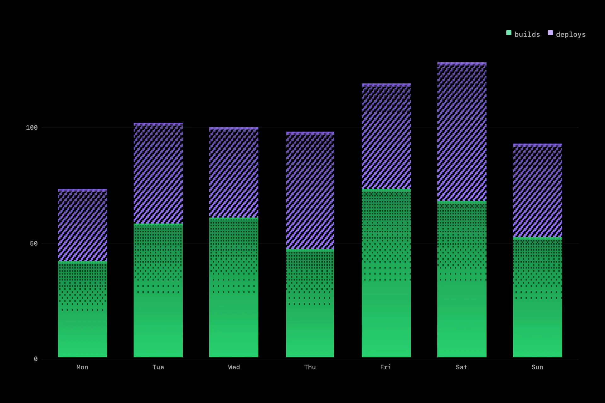
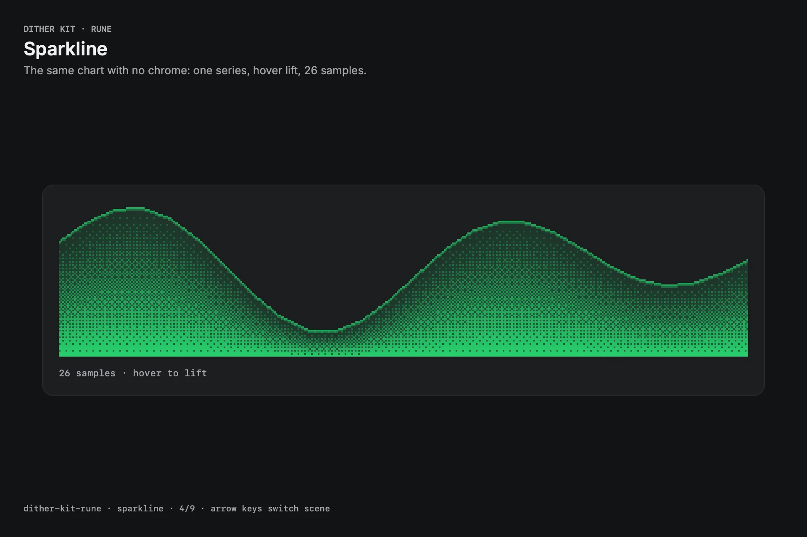
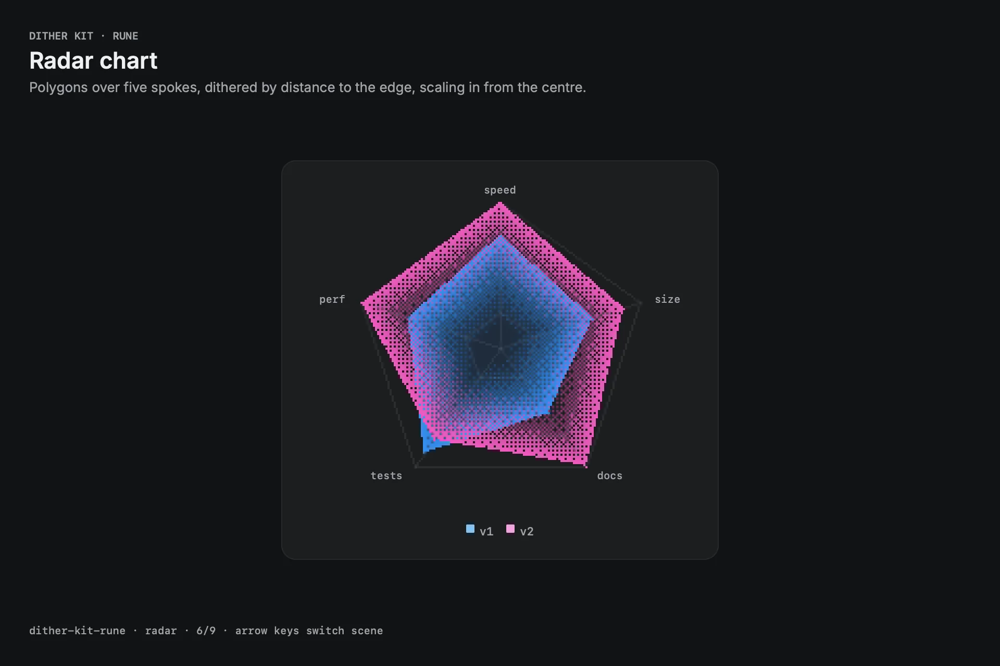
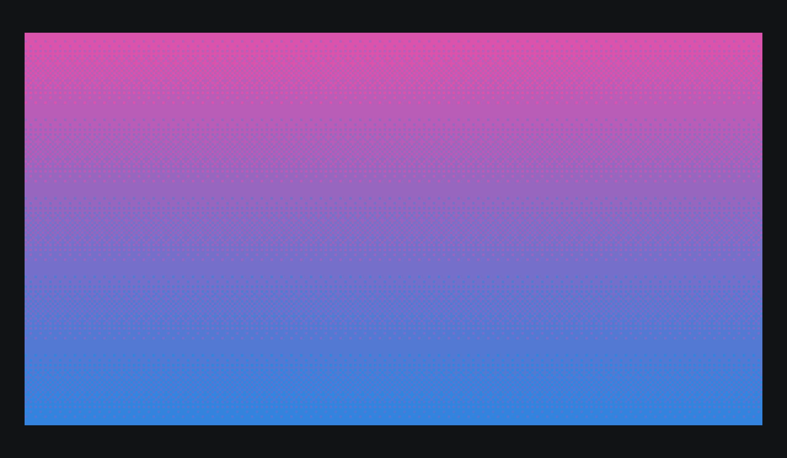

dither-kit-rune
a native rune port of dither-kit — five chart types, generative avatars, buttons, and gradient washes on one tiny deterministic engine
Composable, dithered charts with typed Rust builders. Ordered-dither fills that hold up in light and dark, entrance animations, a gliding scrub, legend selection, and the same alpha-tier model across every component.

install
via cargo — cli or workspace$
cargo install --path crates/dither-cli
$
dither add area-chart
$
dither list
$
cargo run -p gallery
$
cargo run -p gallery -- --scene donut
$
cargo test --workspace
or
paste into Claude Code, Cursor, or any agent to install + wire up a chart
registry items are served at www/r/<item>.json
charts
one surface, four dither variantsarea area-chart 900 × 520
// area chart — build once, keep the Chart in your state
use dither_core::color::DitherColor;
use dither_kit_rune::cartesian::ChartKind;
use dither_kit_rune::chart::{Chart, ChartSeries, ChartSpec};
pub fn chart() -> Chart {
Chart::new(
ChartSpec::new(
(900.0, 520.0),
["Jan", "Feb", "Mar", "Apr"].map(String::from).to_vec(),
vec![ChartSeries::new("value", DitherColor::Blue)],
vec![vec![12.0, 18.0, 15.0, 22.0]],
)
.kind(ChartKind::Area),
)
}
// in your view, forward pointer input; the app's state owns the chart
//
// chart.view(theme)
// .on_pointer_move_local(|state: &mut App, p, _| state.chart.hover_at(p.x))
// .on_hover_change(|state: &mut App, inside, _| {
// if !inside { state.chart.leave(); }
// })bar bar-chart 900 × 520

// bar chart — grouped by default, stacked when you say so
use dither_core::color::DitherColor;
use dither_core::stack::StackMode;
use dither_kit_rune::cartesian::ChartKind;
use dither_kit_rune::chart::{Chart, ChartSeries, ChartSpec};
pub fn chart() -> Chart {
Chart::new(
ChartSpec::new(
(900.0, 520.0),
["Mon", "Tue", "Wed", "Thu"].map(String::from).to_vec(),
vec![
ChartSeries::new("builds", DitherColor::Green),
ChartSeries::new("deploys", DitherColor::Purple),
],
vec![vec![42.0, 58.0, 61.0, 47.0], vec![31.0, 44.0, 39.0, 51.0]],
)
.kind(ChartKind::Bar)
.stack(StackMode::Stacked),
)
}sparkline spark-a 900 × 300

// sparkline — the chart with its chrome turned off
use dither_core::color::DitherColor;
use dither_kit_rune::chart::{Chart, ChartSeries, ChartSpec};
pub fn chart() -> Chart {
let values = [3.0, 7.0, 5.0, 9.0, 8.0, 12.0, 10.0, 14.0, 11.0, 16.0];
let categories = (0..values.len()).map(|i| i.to_string()).collect();
Chart::new(
ChartSpec::new(
(900.0, 300.0),
categories,
vec![ChartSeries::new("value", DitherColor::Green)],
vec![values.to_vec()],
)
.sparkline(),
)
}donut pie-chart 640 × 560

// donut chart — inner radius is a fraction of the outer radius
use dither_core::color::DitherColor;
use dither_kit_rune::pie::{Pie, PieSeries, PieSpec};
pub fn chart() -> Pie {
Pie::new(
PieSpec::new(
(640.0, 560.0),
vec![
PieSeries::new("rust", 38.0, DitherColor::Orange),
PieSeries::new("typescript", 27.0, DitherColor::Blue),
PieSeries::new("go", 19.0, DitherColor::Green),
PieSeries::new("zig", 11.0, DitherColor::Purple),
],
)
.inner(0.52),
)
}radar radar-chart 720 × 560

// radar chart — one value per axis, series-major
use dither_core::color::DitherColor;
use dither_kit_rune::radar::{Radar, RadarSeries, RadarSpec};
pub fn chart() -> Radar {
Radar::new(
RadarSpec::new(
(720.0, 560.0),
["speed", "size", "docs", "tests", "perf"].map(String::from).to_vec(),
vec![
RadarSeries::new("v1", DitherColor::Blue),
RadarSeries::new("v2", DitherColor::Pink),
],
vec![vec![7.0, 6.0, 5.0, 8.0, 6.0], vec![9.0, 8.0, 9.0, 7.0, 9.0]],
),
)
}Chart::new(ChartSpec::new((900, 520), months, series, values)
.kind(ChartKind::Area)
.stack(StackMode::Stacked)
.reference(60.0))beyond charts
standalone — none of these pull in the chart engineavatar avatar 8 × 92
// avatar — same name, same glyph, every time
use dither_kit_rune::avatar::Avatar;
pub fn avatar(name: &str) -> Avatar {
Avatar::new(name, 92.0)
}
// view: avatar.view()
// hue: Avatar::new("ada", 92.0).hue(210.0)
// fold: .mirror(AvatarMirror::Horizontal)button button 4 × 200 × 56

// button — a real control; wire hover, press and the action yourself
use dither_core::color::DitherColor;
use dither_kit_rune::button::{ButtonSpec, DitherButton};
pub fn button() -> DitherButton {
DitherButton::new(ButtonSpec::new("save changes", (200.0, 56.0)).color(DitherColor::Blue))
}
// in your view:
//
// button.view(theme)
// .on_hover_change(|state: &mut App, inside, _| state.button.hover(inside))
// .on_press(|state: &mut App| state.save())gradient gradient 900 × 480

// gradient — quantized directional wash
use dither_core::color::DitherColor;
use dither_core::gradient::{Direction, GradientSpec};
use dither_kit_rune::gradient::DitherGradient;
pub fn gradient() -> DitherGradient {
DitherGradient::new(
(900.0, 480.0),
GradientSpec::new(DitherColor::Blue.fill())
.direction(Direction::Up)
.cell(3.0)
.opacity(0.9),
)
}
// two-tone: .to(DitherColor::Pink.fill())knobs
per-series, typed, no stringly reflection| option | values |
|---|---|
| variant | "gradient" | "dotted" | "hatched" | "solid" |
| stack | "default" | "stacked" | "percent" |
| colours | green blue purple pink orange red grey |
| animate | entrance + replay, settles under reduced motion |
| interactive | false = decorative spark, no crosshair or tooltip |
put together
the gallery dashboard